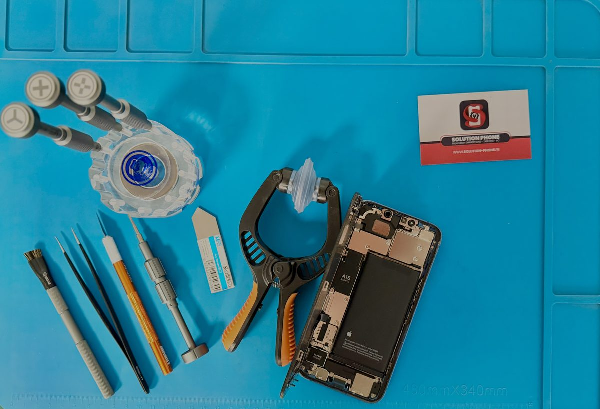

Écran et tactile
Vitre fissurée, affichage noir, taches, lignes ou tactile défaillant.
Écran, batterie, connecteur de charge, caméra ou panne à identifier : décrivez le modèle et le symptôme pour obtenir une réponse adaptée.

Vitre fissurée, affichage noir, taches, lignes ou tactile défaillant.
Autonomie faible, chauffe, extinction ou connecteur qui ne charge plus.
Caméra, son, boutons, oxydation ou panne nécessitant une recherche ciblée.
21 rue Gambetta, 71000 Mâcon. Prix annoncé avant intervention.
Préparez la marque, le modèle exact, le symptôme et les circonstances de la panne.
L’atelier accueille sans rendez-vous. Pour confirmer la disponibilité d’une pièce précise, contactez l’équipe avant de vous déplacer.
Non. L’atelier intervient sur iPhone, Samsung et de nombreux smartphones Android selon le modèle et la disponibilité des pièces.